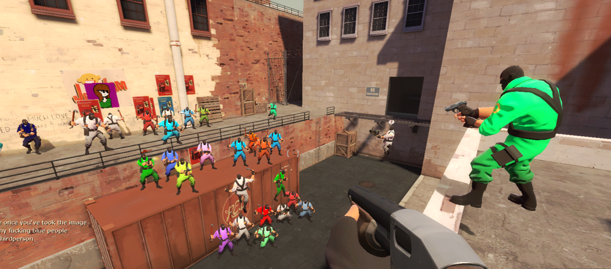

Pre-Split? Community Edition?

What is This?
Maintained by the community, TF2Classic Community Edition is a passion project to keep the removed Deathmatch mode alive, picking up development right where it left off! We use a previously un-released indev version of Team Fortress 2 Classic, the last version with the Deathmatch mode, and build off it into a new game. The community has named this final deathmatch build "Pre-Split." The project is mainly focused on finishing DM and maintaining existing features, whilst backporting newer ones. Originally, the project started as a small patch for the leaked Pre-Split build, but with constant community support we've been able to take our small little fix pack project and turn it into something much much bigger!
Are You Allowed to Release This?
As far as we're aware, yes! When deathmatch was split, Compucolor pictures were given ownership of all Deathmatch related assets. TDC's community manager recently stated that since Pre-Split isn't representative of their game anymore, it's free to be released as long as we don't misinform people. That being said, this build is NOT TDC!!! You can find information on Compucolor Picture's spin on dm here. As for the TF2c's side of things, they've never been too picky about people playing previous builds of the game, especially since 2.0.0 has released. We are not trying to be a replacement, mearly an alternative with some cut content!
Final Points
Told ya we'd be brief. As always, more information can always be found on our Discord. More will eventually be posted to this site when the next big version releases which will fully solidify the game's rebrand from a tf2c patch to "Team Fortress 2 Classic: Community Edition". You can also jump straight into the game right now through our downloads page, which includes an easy install tutorial. Happy Fragging!